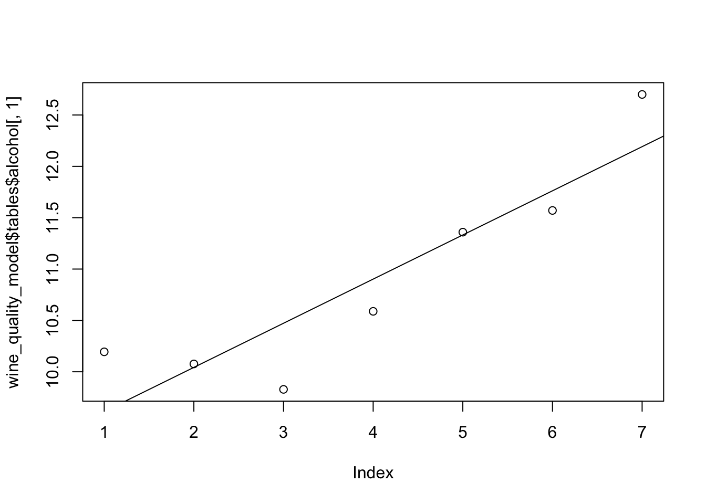

Databricks, SparkR and Distributed Naive Bayes Modeling
Practical walkthroughs on machine learning, data exploration and finding insight.

Resources
One of the recent additions to SparkR is the Naive Bayes classification model. In simple terms, it creates a frequency table cataloging every possible value combination from your historical data for both positive and negative outcomes. Its simpler to visualize by thinking of simple categorical features, but it normally handles any data type. The Bayes theorem can then use the collected frequencies to yield new probabilities:

Which states that:
- the probability of the outcome happening given certain values equals
- the probability for those values for that outcome multiplied
- by the probability for that outcome regardless of the values divided
- by probability for those values regardless of the outcome
If this isn’t clear, check out a brief and funny video from the folks at RapidMiner.
It’s called ‘naive’ because it assumes independence between the predictors, but short of each predictor happening on a different planet, it is hard to know for sure. That said, such assumption simplifies the model tremendously; it makes the model simple, fast, and transparent. It is perfect for working with large data sets in distributed environments - perfect for Spark!
Titanic Dataset
Lets take a look at the Titanic example from Spark’s documentation using a built-in frequency table:
titanic <- as.data.frame(Titanic)
head(titanic)
Class Sex Age Survived Freq
1 1st Male Child No 0
2 2nd Male Child No 0
3 3rd Male Child No 35
4 Crew Male Child No 0
5 1st Female Child No 0
6 2nd Female Child No 0
> tail(titanic)
Class Sex Age Survived Freq
27 3rd Male Adult Yes 75
28 Crew Male Adult Yes 192
29 1st Female Adult Yes 140
30 2nd Female Adult Yes 80
31 3rd Female Adult Yes 76
32 Crew Female Adult Yes 20
We feed the data with 1 or more frequency counts in the spark.naiveBayes model:
titanicDF <- createDataFrame(titanic[titanic$Freq > 0, -5])
nbDF <- titanicDF
nbTestDF <- titanicDF
nbModel <- spark.naiveBayes(nbDF, Survived ~ Class + Sex + Age)
Let’s take a look at the summary output:
summary(nbModel)
(6) Spark Jobs
$apriori
Yes No
[1,] 0.5769231 0.4230769
$tables
Class_3rd Class_1st Class_2nd Sex_Male Age_Adult
Yes 0.3125 0.3125 0.3125 0.5 0.5625
No 0.4166667 0.25 0.25 0.5 0.75
And let’s continue with the example and run the predictions:
nbPredictions <- predict(nbModel, nbTestDF)
showDF(nbPredictions)
(1) Spark Jobs
+-----+------+-----+--------+-----+--------------------+--------------------+----------+
|Class| Sex| Age|Survived|label| rawPrediction| probability|prediction|
+-----+------+-----+--------+-----+--------------------+--------------------+----------+
| 3rd| Male|Child| No| 1.0|[-3.9824097993521...|[0.60062402496099...| Yes|
| 3rd|Female|Child| No| 1.0|[-3.9824097993521...|[0.60062402496099...| Yes|
| 1st| Male|Adult| No| 1.0|[-3.7310953710712...|[0.58003280993672...| Yes|
| 2nd| Male|Adult| No| 1.0|[-3.7310953710712...|[0.58003280993672...| Yes|
| 3rd| Male|Adult| No| 1.0|[-3.7310953710712...|[0.39192399049881...| No|
| Crew| Male|Adult| No| 1.0|[-2.9426380107070...|[0.50318824507901...| Yes|
| 1st|Female|Adult| No| 1.0|[-3.7310953710712...|[0.58003280993672...| Yes|
| 2nd|Female|Adult| No| 1.0|[-3.7310953710712...|[0.58003280993672...| Yes|
| 3rd|Female|Adult| No| 1.0|[-3.7310953710712...|[0.39192399049881...| No|
| Crew|Female|Adult| No| 1.0|[-2.9426380107070...|[0.50318824507901...| Yes|
| 1st| Male|Child| Yes| 0.0|[-3.9824097993521...|[0.76318223866790...| Yes|
| 2nd| Male|Child| Yes| 0.0|[-3.9824097993521...|[0.76318223866790...| Yes|
| 3rd| Male|Child| Yes| 0.0|[-3.9824097993521...|[0.60062402496099...| Yes|
| 1st|Female|Child| Yes| 0.0|[-3.9824097993521...|[0.76318223866790...| Yes|
| 2nd|Female|Child| Yes| 0.0|[-3.9824097993521...|[0.76318223866790...| Yes|
| 3rd|Female|Child| Yes| 0.0|[-3.9824097993521...|[0.60062402496099...| Yes|
| 1st| Male|Adult| Yes| 0.0|[-3.7310953710712...|[0.58003280993672...| Yes|
| 2nd| Male|Adult| Yes| 0.0|[-3.7310953710712...|[0.58003280993672...| Yes|
| 3rd| Male|Adult| Yes| 0.0|[-3.7310953710712...|[0.39192399049881...| No|
| Crew| Male|Adult| Yes| 0.0|[-2.9426380107070...|[0.50318824507901...| Yes|
+-----+------+-----+--------+-----+--------------------+--------------------+----------+
only showing top 20 rows
{% include follow-me.html %}
Golf & Weather Dataset
This is the classic Bayes data set - every example I encountered uses it! And here we go again: Golf|Weather Data Set from Gerardnico:
golf_weather <- read.table(text = "Outlook Temperature_Numeric Temperature_Nominal Humidity_Numeric Humidity_Nominal Windy Play
overcast 83 hot 86 high FALSE yes
overcast 64 cool 65 normal TRUE yes
overcast 72 mild 90 high TRUE yes
overcast 81 hot 75 normal FALSE yes
rainy 70 mild 96 high FALSE yes
rainy 68 cool 80 normal FALSE yes
rainy 65 cool 70 normal TRUE no
rainy 75 mild 80 normal FALSE yes
rainy 71 mild 91 high TRUE no
sunny 85 hot 85 high FALSE no
sunny 80 hot 90 high TRUE no
sunny 72 mild 95 high FALSE no
sunny 69 cool 70 normal FALSE yes
sunny 75 mild 70 normal TRUE yes",header = TRUE,sep = "")
head(golf_weather)
## Outlook Temperature_Numeric Temperature_Nominal Humidity_Numeric
## 1 overcast 83 hot 86
## 2 overcast 64 cool 65
## 3 overcast 72 mild 90
## 4 overcast 81 hot 75
## 5 rainy 70 mild 96
## 6 rainy 68 cool 80
## Humidity_Nominal Windy Play
## 1 high FALSE yes
## 2 normal TRUE yes
## 3 high TRUE yes
## 4 normal FALSE yes
## 5 high FALSE yes
## 6 normal FALSE yes
As you can see with the data, there are two numeric fields. If we try to run it through the spark.naiveBayes model, it will fail and complain about continuous variables (Humidity_Numeric & Temperature_Numeric) not being supported (I imagine this will be fixed eventually, so if it works for you, be happy!):
golf_weather_sparkdf <-as.DataFrame(golf_weather)
golf_weather_model <- spark.naiveBayes(Play ~ ., data = golf_weather_sparkdf)
The good thing with this dataset is it includes binned features for the both Humidity_Numeric and Temperature_Numeric: Humidity_Nominal and Temperature_Nominal. Let’s remove them numeric features, split the dataset and train/validate it using Naive Bayes.
# remove the two features using dplyr's select command
library(dplyr)
golf_weather %>% dplyr::select(-Humidity_Numeric, -Temperature_Numeric) -> golf_weather
str(golf_weather)
'SparkDataFrame': 5 variables:
$ Outlook : chr "overcast" "overcast" "overcast" "rainy" "rainy" "rainy"
$ Temperature_Nominal: chr "cool" "mild" "hot" "mild" "cool" "mild"
$ Humidity_Nominal : chr "normal" "high" "normal" "high" "normal" "high"
$ Windy : logi TRUE TRUE FALSE FALSE FALSE TRUE
$ Play : chr "yes" "yes" "yes" "yes" "yes" "no"
Split the data and run the model:
# cast into Spark dataframes
golf_weather_spark <-as.DataFrame(golf_weather)
golf_weather_model <- spark.naiveBayes(Play ~ ., data = golf_weather_spark)
summary(golf_weather_model)
$aapriori
yes no
[1,] 0.625 0.375
$tables
Outlook_rainy Outlook_sunny Temperature_Nominal_mild
yes 0.3636364 0.2727273 0.4545455
no 0.4285714 0.5714286 0.4285714
Temperature_Nominal_cool Humidity_Nominal_high Windy
yes 0.3636364 0.3636364 0.3636364
no 0.2857143 0.7142857 0.5714286
How about feeding it some custom data to predict the probability of golfing - what if it is rainy, hot, normal humidity, and windy?
head(predict(golf_weather_model, as.DataFrame(data.frame(Outlook = c('rainy'), Temperature_Nominal=c('hot'), Humidity_Nominal=c('normal'), Windy=c(TRUE)))),1)
Outlook Temperature_Nominal Humidity_Nominal Windy rawPrediction
1 rainy hot normal TRUE
probability prediction
1 yes
What about if it is overcast, hot, high humidity, and windy?
head(predict(golf_weather_model, as.DataFrame(data.frame(Outlook = c('overcast'), Temperature_Nominal=c('hot'), Humidity_Nominal=c('high'), Windy=c(TRUE)))),1)
Outlook Temperature_Nominal Humidity_Nominal Windy rawPrediction
1 overcast hot high TRUE
probability prediction
Wine Quality Data Set
A lot of Naive Bayes classification models in R can work with both categorical and continuous variables. These models know how to transform continuous variables in probabilities using functions such as the Probability Density Function (PDF).
Here is a look using function naiveBayes from the e1071 library and a bigger dataset to keep things interesting. We’ll use the UCI Machine Learning Repository’s Wine Quality Data Set. The data list various measurements for different wines along with a quality rating for each wine between 3 and 9.
Let’s start by loading in and splitting the data:
winequality_red <- read.csv('http://mlr.cs.umass.edu/ml/machine-learning-databases/wine-quality/winequality-red.csv',
sep = ';')
winequality_white <- read.csv('http://mlr.cs.umass.edu/ml/machine-learning-databases/wine-quality/winequality-white.csv',
sep = ';')
# bind both data sets together
wine_quality <- rbind(winequality_red, winequality_white)
# replace period in column name with underscore
names(wine_quality) <- gsub(names(wine_quality), pattern = '\\.', replacement = '_')
dim(wine_quality)
## [1] 6497 12
wine_quality$quality <- as.factor(wine_quality$quality)
# split it into two parts
set.seed(1234)
random_splits <- runif(nrow(wine_quality))
train_split_data <- wine_quality[random_splits < .5,]
validate_split_data <- wine_quality[random_splits >= .5,]
Now let’s run it through the e1071 naiveBayes model and take a look at what the model does with some continuous variables:
#install.packages('e1071')
library(e1071)
wine_quality_model <- naiveBayes(quality ~ ., data = train_split_data)
If you feed your continuous variables directly into naiveBayes, it will use a Probability Density Function (PDF) to calculate likelihood and probabilities for that variable in relation to the outcome (it assumes your data is normally distributed).
Let’s take a closer look by focusing on one feature called alcohol. Alcohol is shown to be one of the more important features to predict quality. Here is a look at the transformation that takes place before feeding it through the PDF function:
head(wine_quality$alcohol)
## [1] 9.4 9.8 9.8 9.8 9.4 9.4
and after:
head(wine_quality_model$tables$alcohol)
## alcohol
## Y [,1] [,2]
## 3 10.194118 1.2978206
## 4 10.076293 0.8842944
## 5 9.828416 0.8009873
## 6 10.588285 1.1324282
## 7 11.359167 1.2269708
## 8 11.570526 1.2773704
It then feeds the mean and standard deviation from continuous features along with the outcome variable in the distribution function to get the likelihood for the features and each outcome.
plot(wine_quality_model$tables$alcohol[,1])
abline(lm(wine_quality_model$tables$alcohol[,1] ~
seq(nrow(wine_quality_model$tables$alcohol))))

table(validate_split_data[,12])
##
## 3 4 5 6 7 8 9
## 13 100 1094 1419 539 98 3
table('predictied'=predict(wine_quality_model, validate_split_data[,-12]),
'actual'=validate_split_data[,12])
## actual
## predictied 3 4 5 6 7 8 9
## 3 2 1 18 17 9 1 0
## 4 3 9 22 21 3 1 0
## 5 5 44 588 417 52 10 0
## 6 2 32 388 572 175 26 1
## 7 1 14 77 371 267 52 1
## 8 0 0 1 20 32 8 1
## 9 0 0 0 1 1 0 0
Unfortunately, the spark.naiveBayes currently only handles categorical variables so we’ll have to bin the variables manually and all the while in the SparkDataFrame format to preserve the ‘big data’, clustered advantage.
For more information and updates on this topic, go to the source, the official help files: SparkR (R on Spark) - Naive Bayes Model
train_split_data_spark <- as.DataFrame(train_split_data)
validate_split_data_spark <- as.DataFrame(validate_split_data)
# make sql temp view
createOrReplaceTempView(train_split_data_spark, "train_split_data_spark_table")
createOrReplaceTempView(validate_split_data_spark, "validate_split_data_spark_table")
To do the binning, we’ll use Spark SQL and the NTILE function:
collect(sql("SELECT alcohol, NTILE(4) OVER (ORDER BY alcohol) AS alcohol_quartiles FROM train_split_data_spark_table"))
alcohol alcohol_quartiles
1 8.000000 1
2 8.400000 1
3 8.400000 1
4 8.400000 1
*** WARNING: skipped xxxx bytes of output ***
4
3081 12.700000 4
3082 12.700000 4
3083 12.700000 4
3084 12.700000 4
3085 12.700000 4
Apply NTILE to all continuous variables:
train_split_data_spark <- sql("SELECT
case when NTILE(2) OVER (ORDER BY alcohol) = 1 then 'low' else 'high' end AS alcohol,
case when NTILE(2) OVER (ORDER BY fixed_acidity) = 1 then 'low' else 'high' end AS fixed_acidity,
case when NTILE(2) OVER (ORDER BY citric_acid) = 1 then 'low' else 'high' end AS citric_acid,
case when NTILE(2) OVER (ORDER BY residual_sugar) = 1 then 'low' else 'high' end AS residual_sugar,
case when NTILE(2) OVER (ORDER BY chlorides) = 1 then 'low' else 'high' end AS chlorides,
case when NTILE(2) OVER (ORDER BY free_sulfur_dioxide) = 1 then 'low' else 'high' end AS free_sulfur_dioxide,
case when NTILE(2) OVER (ORDER BY total_sulfur_dioxide) = 1 then 'low' else 'high' end AS total_sulfur_dioxide,
case when NTILE(2) OVER (ORDER BY pH) = 1 then 'low' else 'high' end AS pH,
case when NTILE(2) OVER (ORDER BY sulphates) = 1 then 'low' else 'high' end AS sulphates,
quality FROM train_split_data_spark_table")
validate_split_data_spark <- sql("SELECT
case when NTILE(2) OVER (ORDER BY alcohol) = 1 then 'low' else 'high' end AS alcohol,
case when NTILE(2) OVER (ORDER BY fixed_acidity) = 1 then 'low' else 'high' end AS fixed_acidity,
case when NTILE(2) OVER (ORDER BY citric_acid) = 1 then 'low' else 'high' end AS citric_acid,
case when NTILE(2) OVER (ORDER BY residual_sugar) = 1 then 'low' else 'high' end AS residual_sugar,
case when NTILE(2) OVER (ORDER BY chlorides) = 1 then 'low' else 'high' end AS chlorides,
case when NTILE(2) OVER (ORDER BY free_sulfur_dioxide) = 1 then 'low' else 'high' end AS free_sulfur_dioxide,
case when NTILE(2) OVER (ORDER BY total_sulfur_dioxide) = 1 then 'low' else 'high' end AS total_sulfur_dioxide,
case when NTILE(2) OVER (ORDER BY pH) = 1 then 'low' else 'high' end AS pH,
case when NTILE(2) OVER (ORDER BY sulphates) = 1 then 'low' else 'high' end AS sulphates,
quality FROM validate_split_data_spark_table")
head(validate_split_data_spark)
alcohol fixed_acidity citric_acid residual_sugar chlorides
1 high high high low high
2 high high high low high
3 high high low low high
4 high low low low high
5 low high high low high
6 high high high low high
free_sulfur_dioxide total_sulfur_dioxide pH sulphates quality
1 low low low high 5
2 low low low high 5
3 low low high high 6
4 low low high high 4
5 low low low high 6
6 low low low high 6
We’re finally ready to run the model and predict wine quality!!
wine_quality_model <- spark.naiveBayes(quality ~ ., data = train_split_data_spark) summary(wine_quality_model)
$apriori
6 5 7 4 8 3
[1,] 0.4379246 0.3227301 0.1670784 0.03613342 0.02964793 0.005558987
9
[1,] 0.0009264978
$tables
alcohol_low fixed_acidity_low citric_acid_low residual_sugar_low
6 0.4432699 0.5285412 0.4982382 0.4926004
5 0.7571702 0.4521989 0.5353728 0.5047801
7 0.1918819 0.5147601 0.4243542 0.5129151
4 0.6271186 0.4661017 0.6016949 0.5423729
8 0.1340206 0.5979381 0.4845361 0.4329897
3 0.5263158 0.3684211 0.3684211 0.4736842
9 0.25 0.25 0.25 0.75
chlorides_low free_sulfur_dioxide_low total_sulfur_dioxide_low pH_low
6 0.5348837 0.491191 0.5193798 0.4827343
5 0.3565966 0.5248566 0.4464627 0.540153
7 0.6568266 0.4520295 0.5350554 0.4741697
4 0.3983051 0.7711864 0.6271186 0.5
8 0.7731959 0.2783505 0.443299 0.4742268
3 0.5263158 0.6315789 0.5263158 0.5263158
9 0.75 0.5 0.5 0.25
sulphates_low
6 0.4876674
5 0.5181644
7 0.4538745
4 0.6101695
8 0.5979381
3 0.5263158
9 0.75
Let’s check our predictions:
table(collect(validate_split_data_spark[,10]))
3 4 5 6 7 8 9
13 100 1094 1419 539 98 3
preds <- collect(select(predict(wine_quality_model, validate_split_data_spark[,-10]),'prediction'))
actual <- collect(validate_split_data_spark[,10])
table('predicted'=preds$prediction, 'actual'=actual$quality)
actual
predicted 3 4 5 6 7 8 9
5 5 27 416 552 205 34 1
6 8 73 676 865 333 63 2
7 0 0 2 2 1 1 0
Special thanks to Lucas for the great data-brick-flip artwork!!!